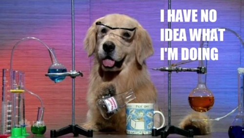
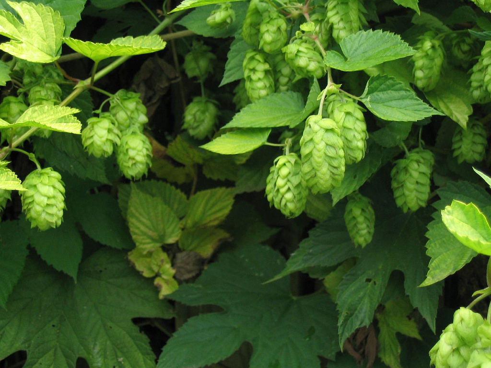
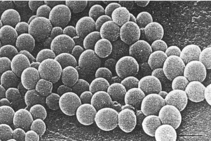
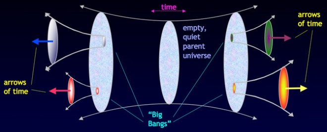

Homebrew
The beer, not the package manager
Pivotal Labs NYC tech talk. Feb 21st, 2012
YOU!
Why brew?
- Impress your friends
- Crush your enemies
- Make any beer
- Appreciate a rich tradition of beers
- Satisfaction
- Post-apocalyptic afterparty
- Did we mention we are making beer?
"But I don't have enough space."
Yes, you do
"But I don't have enough time."
Yes, you do
- An afternoon of brewing
- Then a lot of this:
"But..."
Let's get started!
Relax, don't worry, have a homebrew.
-Charlie Papazian
What is Beer?
- water
- malt/barley
- hops
- yeast
- time
Making beer in five minutes
Water
If you don't know what this, we can't help you.
...anyway,
Boil it
Malt
Add it to the boiling water
- Sweetness
- Body
- Nutrients for yeast
Hops
Also add to the boiling water
- Bittering
- Flavor/aroma
- Preservative
Yeast
It's not really this scary.
It comes in a package and you add it to your wort after cooling
- Eats sugar
- Produces CO2 and alcohol as a byproduct
Time
Weeks and weeks
But finally...
Beer!
big detailed outline of ingredients, maybe merge this into the detailed brew steps?
I think the following ingredients section and the process part can be merged into the 9 steps section
Water
- hard or soft
- minerals for yeast
- ~90% of beer
Barley
- malted
- mashed
- yeast food
- starch -> sugar -> alcohol
Yeast
- eats sugar
- produces co2 and alcohol as a byproduct
- likes 45°-80°F
What is the process?
- Mashing
- Boiling
- Fermenting
- Conditioning
- Consuming!
The Mash
- takes place in a mash tun
- enzymes in grain convert starch into simpler sugars
grain + water + time(90 minutes) + temp(154°F) => sweet wort
OR…USE EXTRACT!
pre-made wort concentrate
just skip this step
The Boil
- takes place in a kettle
- hop isomerization
- Malliard reaction
- most importantly STERILIZATION
wort + hops + time(60 minutes) + temp(220°) => hopped wort
Fermentation
wort + yeast + time(2 weeks-3years) + darkness + temp(65°F) => flat beer
- takes place in a carboy
- aerobic phase (reproduction)
- anaerobic phase (alcohol production)
- yeast converts ~80% of sugar to alcohol
Conditioning
sugar + flat beer + darkness + temp(65°F) + time(2 weeks) => beer
- takes place in a bottle
- carbonation with co2
- yeast consumes final nutrients and settles to the bottom
9 Steps to Your First Beer
1. Gather
Ingredients
- 4 oz Cascade hops
- 7-9 lbs Liquid Malt Extract
- 1 pack Wyeast 1056 American Ale Yeast
Equipment
- 3-8 gallon kettle
- carboy
- airlock (drilled stopper, vinyl tube, sanitizer, bucket)
- sanitizer
- siphon (vinyl tube)
- ~48 bottles
- bottling bucket, vinyl tube, bottling wand
- capper + crown caps
2. Boil as much water as you can
3-6 gallons
3. Add LME, Boil 1 hour
add hops, half at the beginning (>60min), half at the end (<10min)
4. Cool Wort Quickly
immerse the pot in cold water wait until it is <85°
5. Transfer wort, add yeast
sanitize carboy (don't fear the foam)
kettle -> carboy
add water to make 5 gallons
seal the airlock and put it somewhere dark and cool
6. Wait
the hardest part
7. Bottle
- add 10 grams sugar
- sanitize bottles
- fill
- cap
8. wait more
keep bottles in a cool, dark place (but not the fridge)
Enjoy!
- chill
- pour gently into a glass
- evaluate, share with beer snobs (us)